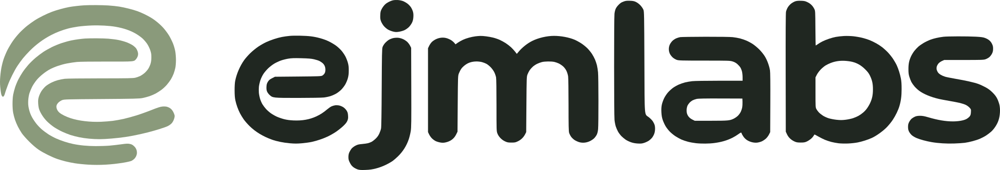
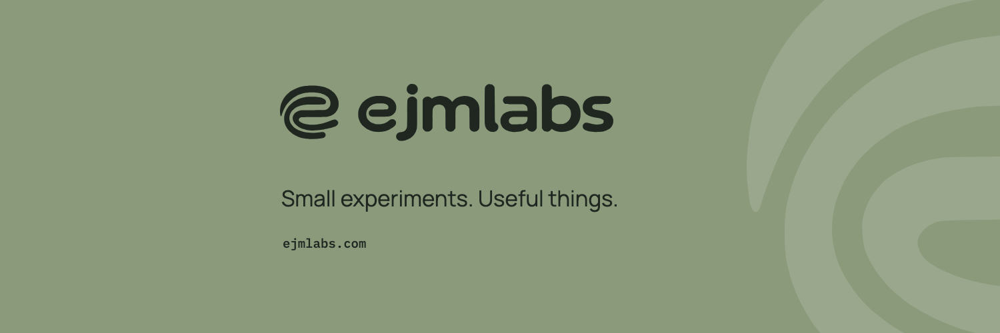
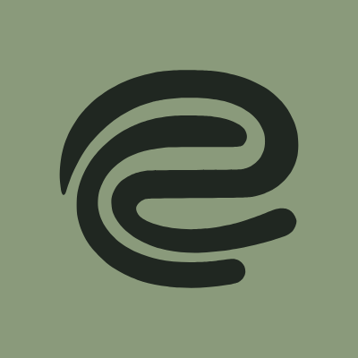
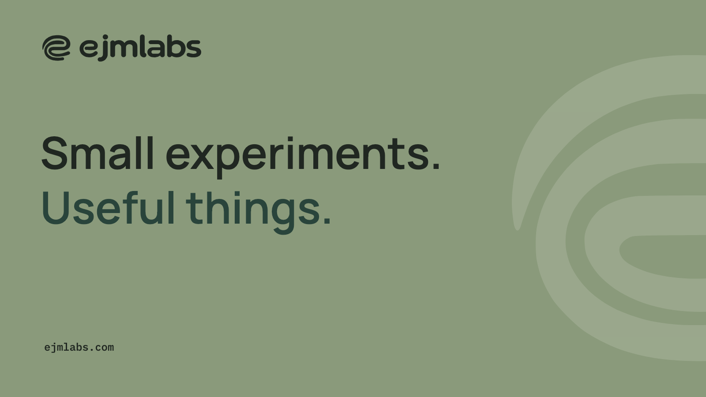
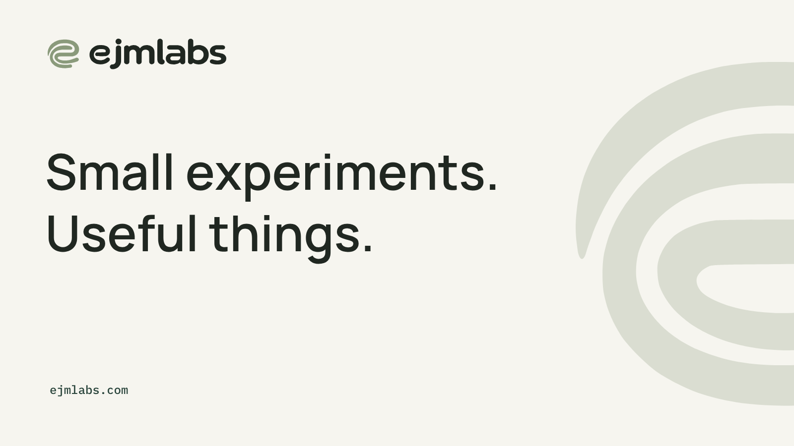
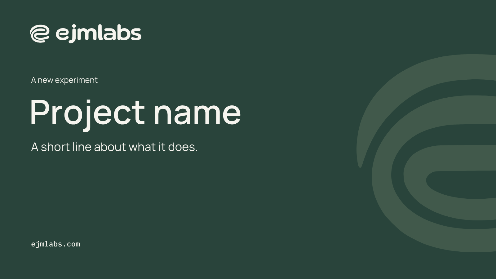

Download complete kitejmlabs on X
The original identity, ready for a profile, a new experiment, or a useful thing worth sharing.


ejmlabs
@ejmlabs
An independent studio for small experiments, useful software, and open source tools.
ejmlabs.comProfile mockup. Handle availability has not been checked.
Three ways to wear it.
Sage leads; Forest is a rare accent. Use one pair for the profile. Keep the complete symbol in the avatar and let its larger form crop in the header.


A place to begin.
A signature post and an editable project layout, both in 1600 × 900, in Sage first with the Paper and Forest versions as alternates. Replace the project placeholder before sharing.









Words from the brand guide.
Recommended bio
An independent studio for small experiments, useful software, and open source tools.
Pinned introduction draft
Hello, we're ejmlabs. An independent studio for small experiments, useful software, and open source tools. Follow along for ideas, process, and things we make. Small experiments. Useful things.